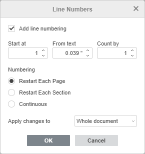

Ubaci brojeve linija
ONLYOFFICE Document Editor može automatski brojati linije u dokumentu. Ova funkcija može biti korisna kada želite da se pozovete na određenu liniju dokumenta, npr. u pravnom ugovoru ili kodu. Koristite alat Brojevi linija da primenite numerisanje linija. Imajte na umu da numeracija linija nije primenjena na tekst unutar objekata kao što su tabele, tekstualni okviri, grafikoni, zaglavlja/podnožja itd. Ovi objekti se tretiraju kao jedna linija.
Primena numerisanja linija
- Otvorite Izgled tab na gornjoj alatnoj traci i kliknite na Brojevi linija ikonu.
-
Izaberite željene parametre u otvorenom padajućem meniju za brzu primenu:
- Kontinuirano - svaka linija dokumenta će dobiti redni broj.
- Ponovo na svakoj strani - numeracija linija će se ponovo započeti na svakoj stranici dokumenta.
- Ponovo u svakoj sekciji - numeracija linija će se ponovo započeti u svakoj sekciji dokumenta. Pogledajte ovaj vodič za više informacija o sekcijama.
- Preskoči trenutni pasus - trenutni pasus neće biti numerisan. Da biste isključili više pasusa, selektujte ih levi klikom pre primene ove opcije.
-
Po potrebi podesite napredne parametre. Kliknite na stavku Opcije numerisanja linija u padajućem meniju Brojevi linija. Obeležite Dodaj numeraciju linija da primenite numeraciju i pristupite naprednim parametrima:

- Počni od - postavlja početni broj numeracije. Podrazumevana vrednost je 1.
- Od teksta - određuje razmak između brojeva i teksta. Unesite željenu vrednost u cm. Podrazumevano je Automatski.
- Broji po - definiše redne brojeve ako se ne broji po 1, npr. po 2, 3, 4 itd. Unesite željenu vrednost. Podrazumevano je 1.
- Ponovo na svakoj strani - numeracija počinje iznova na svakoj stranici.
- Ponovo u svakoj sekciji - numeracija počinje iznova u svakoj sekciji.
- Kontinuirano - svaka linija dobija redni broj.
- Primeni promene na - određuje deo dokumenta na koji će se primeniti numeracija. Izaberite: Trenutna sekcija, Od ove tačke nadalje, Ceo dokument. Podrazumevano je Ceo dokument.
- Kliknite OK za primenu promena.
Uklanjanje numeracije linija
Da uklonite numeraciju linija,
- otvorite Izgled tab na gornjoj alatnoj traci i kliknite na Brojevi linija ikonu,
- izaberite Nijedno u otvorenom meniju ili kliknite na Opcije numerisanja linija i uklonite ček sa Dodaj numeraciju linija u prozoru Brojevi linija.